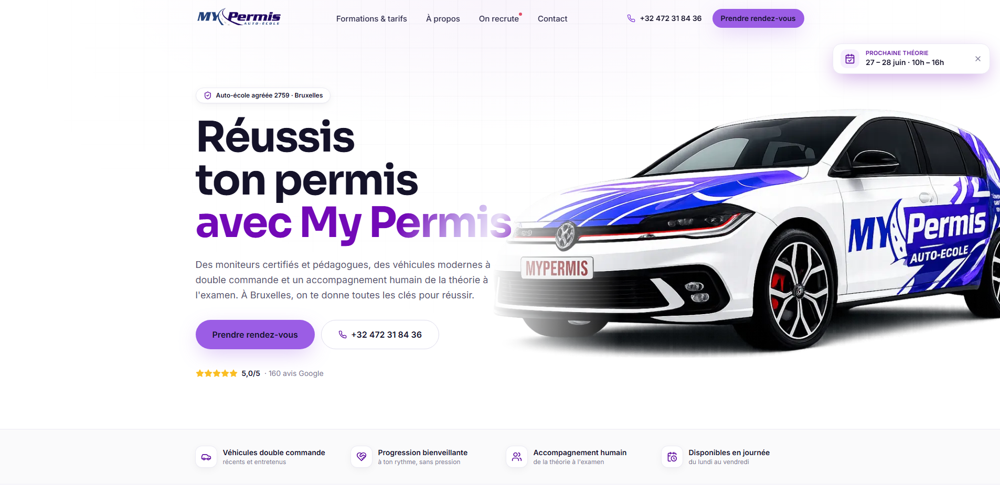
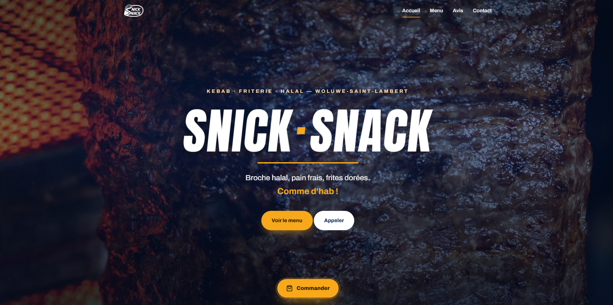
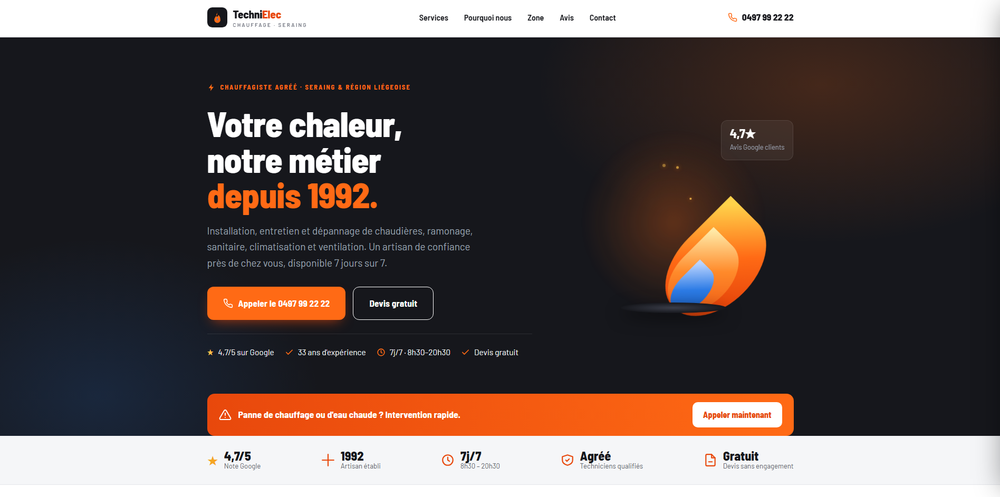
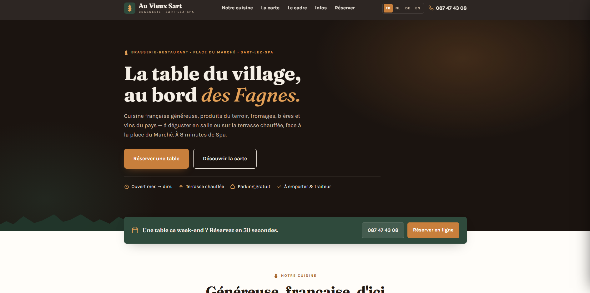

Live, production-style sites I designed and built. Click any card to open the site.

A conversion-focused site for a Brussels driving school, built with Next.js & Tailwind. Sticky "next theory session" widget, bold booking CTAs and live trust signals (5.0★ · 160 Google reviews, official accreditation). Confident branding engineered to turn visitors into booked lessons.

Zero-dependency vanilla JS site for a halal kebab & friterie. Bilingual FR/EN driven from a single data file, live Google reviews via the Places API, and a cinematic dark hero — no framework, no build step, instant load. Craft over bloat.

A trust-first site for a heating & sanitary artisan established in 1992. Urgency-driven design — an emergency call banner, 7/7 availability and 4.7★ social proof — turns a breakdown into a phone call. Fully self-contained: no cookies, no trackers, no third-party requests.

An editorial, hospitality-grade site for a village brasserie by the Fagnes. Serif elegance, four languages (FR/NL/DE/EN), a live-editable menu and a sticky reservation bar for effortless bookings. Refined, warm and unmistakably local.